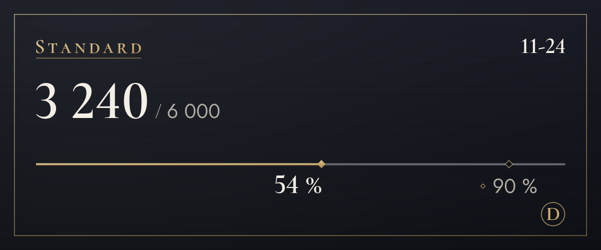

Planai ir kainos
Pradėk nemokamai, o prireikus daugiau – pakeisk planą.
Vyksta bandomasis laikotarpis, todėl mokėjimų dar nepriimame. Kai pradėsime priimti mokėjimus, planą užsisakysi ir jo atsisakysi šiame puslapyje. Bandomuoju laikotarpiu vertimas nesustoja net viršijus limitą.
Free
0 $
Pirmiausia išbandyk (originalo peržiūra neskaičiuojama)
Vertimų per mėnesį: 100 (apie 3 per dieną), 4 tonai pirmąsias 14 dienų, 3 žodžiai žodynėlyje
Iš šio limito taip pat naudojama: tekstas vaizduose (paprastai 4 už vaizdą) ir vertimas ant vaizdų (paprastai 6)
Kaip pradėtiLite
4,99 $/mėn.
Toną renkiesi kiekvienam serveriui: su draugais – „tu“, naujoje vietoje – „jūs“
Vertimų per mėnesį: 1 200 (apie 40 per dieną), 4 tonai, išnaudojus limitą, dar 20 per dieną, 10 žodžių žodynėlyje
Iš šio limito taip pat naudojama: tekstas vaizduose (paprastai 4 už vaizdą) ir vertimas ant vaizdų (paprastai 6)
Pasirinkti (Lite)Standard
Rekomenduojama
9,99 $/mėn.
Su kaupu kasdieniams pokalbiams
Vertimų per mėnesį: 6 000 (apie 200 per dieną), 4 tonai, išnaudojus limitą, dar 20 per dieną, 30 žodžių žodynėlyje, 20 paaiškinimų per mėnesį
Iš šio limito taip pat naudojama: tekstas vaizduose (paprastai 4 už vaizdą) ir vertimas ant vaizdų (paprastai 6)
Pasirinkti (Standard)Plus
14,99 $/mėn.
Daugiausia vertimų tiems, kurie verčia daug
Vertimų per mėnesį: 20 000 (apie 667 per dieną), 4 tonai, išnaudojus limitą, dar 20 per dieną, 100 žodžių žodynėlyje, 60 paaiškinimų per mėnesį
Iš šio limito taip pat naudojama: tekstas vaizduose (paprastai 4 už vaizdą) ir vertimas ant vaizdų (paprastai 6)
Pasirinkti (Plus)
- Kainos nurodytos JAV doleriais. Tavo šalies mokesčiai pridedami apmokėjimo lange.
- Mokami planai – tai mėnesio prenumeratos, kurios atsinaujina automatiškai. Atsisakyti gali bet kada, ir kitas mokėjimas nebus imamas.
- Free planas niekada savaime netampa mokamu.
- Teisė atsisakyti sutarties ribojama jau panaudotai daliai, o Free planą gali išbandyti pirmiausia.
- Vertimus atlieka AI (Anthropic sukurtas Claude). Jie gali būti klaidingi, todėl svarbiais atvejais patikrink ir originalą.
- Daugiau informacijos rasi dokumentuose „Naudojimosi sąlygos“ ir „Pinigų grąžinimo politika“.
Kaip skaičiuojami vertimai
Planų limitai skaičiuojami vertimais. Viena žinutė, išversta į vieną kalbą, yra 1 vertimas.
- Tekstas
- 1 už žinutęIlgoms žinutėms pridedamas 1 vertimas už kiekvienus 200 korėjiečių, kinų ar japonų kalbos simbolių arba už kiekvienus 500 kitų kalbų simbolių. Žinutės, kuriose nėra ką versti, neskaičiuojamos.
- Dešiniuoju mygtuku
- 1 už žinutęTaip pat, kaip tekstas. Originalo ar kitos kalbos peržiūra neskaičiuojama.
- Tekstas vaizduose
- Paprastai 4 už vaizdąVaizdo perskaitymas – 3, plius perskaityto teksto vertimas. Vaizdai be teksto neskaičiuojami, o iš vienos žinutės perskaitoma iki 4 vaizdų.
- Vertimas ant vaizdų
- 6 už vieną teksto blokąPerskaitymas – 3, vertimas – 1, įrašymas – 2. Kiekvienas papildomas blokas prideda bent 1 už savo vertimą, o blokai skaičiuojami grupėmis po 16: kiekviena grupė – kaip vienas vaizdas. Jei blokų daugiau nei 16, pirmiausia pamatysi kainą, o vertimas uždedamas tik tau patvirtinus (iki 128 blokų). Šrifto keitimas neskaičiuojamas.
- Balso žinutės Netrukus
- 1 už garso sekundęRuošiame galimybę paversti tekstu ir išversti balso žinutes, išsiųstas iš telefono programėlės. Kai ji pradės veikti, bus pridedamas to, kas pasakyta, vertimas, o žinutės be kalbos nebus skaičiuojamos.
- Dienos riba
- Vaizdų: 200Skaičiuojama kiekvienam žmogui atskirai ir vienodai visuose planuose, kad masinis automatizuotas naudojimas negalėtų sustabdyti vertimų visiems kitiems.
- Kas moka
- Vertimai, atidaryti vaizdų piktogramomis arba dešiniuoju pelės mygtuku, skaičiuojami tam, kuris paspaudė, o ne tam, kuris paskelbė žinutę.
Pavyzdžiui
Vertimų per dieną: 200
Standard plano dienos dalis
Užtenka išversti kelis vaizdus ir dar visą vakarą kalbėtis.
Vertimų per dieną: 40
Lite plano dienos dalis
Užtenka valandai pokalbių su draugais.

/vertimas naudojimas.Dažniausiai užduodami klausimai
Kada bus galima mokėti?
Vyksta bandomasis laikotarpis, todėl mokėjimų nepriimame ir visi naudojasi Free planu. Mokėjimus pradėsime priimti, kai bus įregistruota veikla ir prijungtas mokėjimų paslaugų teikėjas; datą paskelbsime pagalbos serverio naujienose ir šiame puslapyje. Korėjoje mokama vonais, visur kitur – JAV doleriais.
Kaip atsisakyti plano?
Kai bus galima mokėti, planą atsisakysi šios svetainės planų puslapyje – ten pat, kur jį užsisakai. Atsisakius kitas mokėjimas nebus imamas, o planu galėsi naudotis iki apmokėto laikotarpio pabaigos. Čia veda ir plano tvarkymo ekranas boto nustatymų skydelyje.
Kaip grąžinami pinigai?
Per 7 dienas gali atgauti visą pirmojo mokėjimo sumą. Pinigus taip pat grąžiname sutrikus paslaugai arba jei paslauga neatitinka to, kas parašyta šiame puslapyje. Kitos sąlygos – dokumente „Pinigų grąžinimo politika“.
Ar saugomi vaizdai?
Botas jų nesaugo. Vaizdai siunčiami bendrovei Anthropic tekstui perskaityti, o tau parodomas tik rezultatas. Kol nepaspaudi mygtuko, niekas nesiunčiama. Perskaitytas tekstas taip pat nesaugomas; tik vertimui taikoma vertimų talpyklos taisyklė (30 dienų). Kad pakeitus šriftą vaizdas būtų iškart perpieštas, vaizdas, kuriam paspaudei „Uždėti vertimą“, kartu su perskaitytu tekstu ir jo vertimu 15 minučių laikomas atmintyje.
Kas atlieka vertimus?
Vertimus atlieka AI (Anthropic sukurtas Claude). Tas pats AI perskaito tekstą vaizduose. Vertimai gali būti klaidingi, todėl svarbiais atvejais patikrink ir originalą. Vaizdų su įrašytais vertimais aprašyme (alternatyviajame tekste) ir pastaboje po rezultatu nurodyta, kad tai AI vertimas.